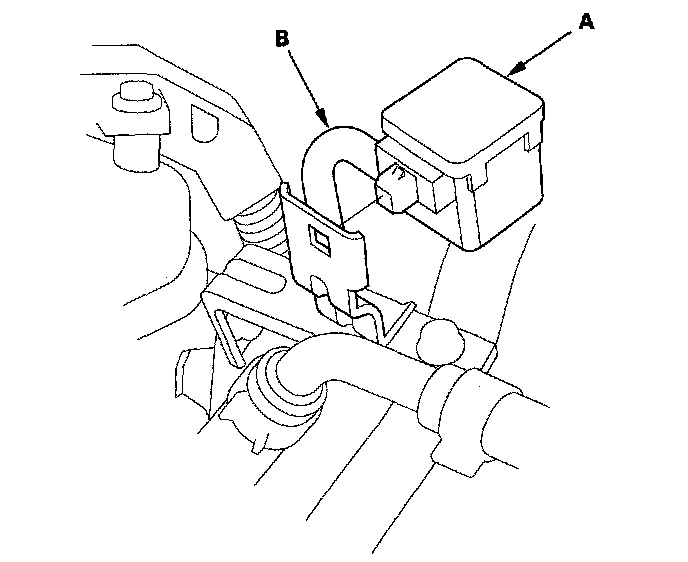
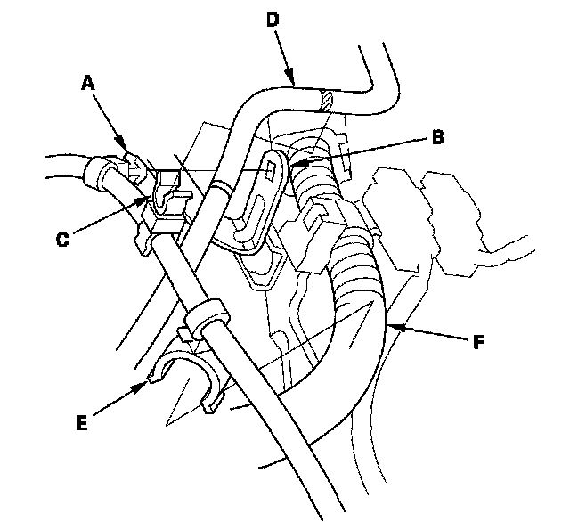
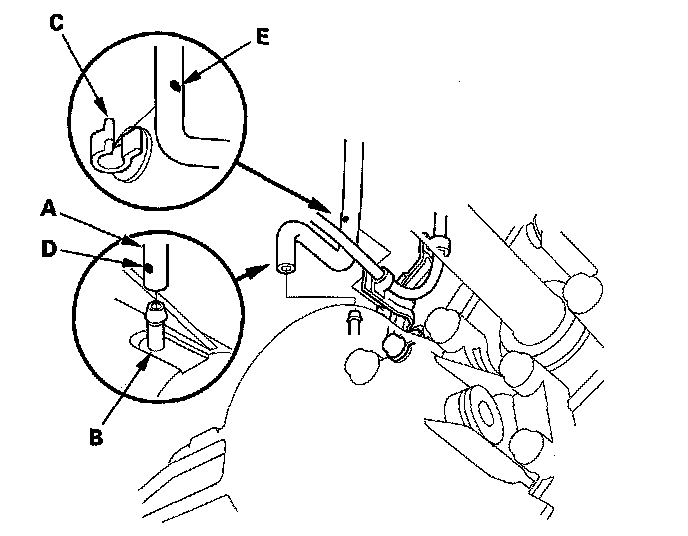

Transfer Breather Hose Replacement
Transfer Breather Hose Replacement1. Raise the vehicle, and make sure it is supported securely.
2. Remove the transfer breather (A) from its bracket (B).

3. Remove the breather hose clamp (A) from the hose clamp (B) and remove the hose clamp (C) from the vacuum hose (D).

4. Remove the harness clamp (E) on the breather hose from the engine harness (F).
5. Disconnect the breather hose (A) from the transfer breather pipe (B) and remove the breather hose from the hose clamp (C).

6. Install the breather hose over the breather pipe with the dot (D) facing out, and install the hose on the hose clamp at the dot (E).
7. Install the breather hose clamp on the hose clamp, and install the hose clamp on the vacuum hose at the mark.
8. Install the harness clamp on the engine harness.
9. Install the transfer breather on its bracket.